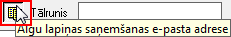
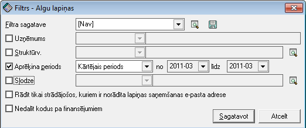
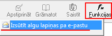
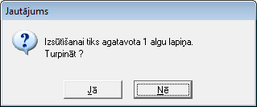

Algu lapiņas¶
Atskaiti - algu lapiņas, iespējams sagatavot par kārtējo periodu, pēc algu aprēķinu veikšanas, lai strādājošiem būtu iespējams piegādāt algu lapiņas, tās izdrukājot un izsniedzot papīra formātā vai nosūtot elektroniski uz strādājošā partnera kartiņas aprakstā norādīto e-pastu.
Algu lapiņu izsūtīšana pa e-pastu kalpo ērtākai un ātrākai lapiņu nogādāšanai strādājošajiem elektroniskā formātā.
Algu lapiņu sagatavošana sūtīšanaipa e-pastu¶
Algu lapiņas tiek sagatavotas atskaites veidā, norādot atbilstošos filtra atlases kritērijus, lai algu lapiņas tiktu sagatavotas viena perioda un struktūrvienības ietvaros, vai arī visa uzņēmuma ietvaros.
Priekšnosacījumi sekmīgai rēķinu nosūtīšanai elektroniskā formātā pa
e-pastu
```
1. Pirms algu lapiņu izsūtīšanas:doc:<304> ,:doc:partneru kartiņā<312> jābūt norādītam partnera e-pastam:

un iezīmētam ķeksītim:

Algu lapiņu sūtīšanapa e-pastu¶
Lai nosūtītu algu lapiņas pa e-pastu, datus atskaites veidā iespējamsatlasīt pēc nepieciešamajiem filtra kritērijiem:

Uzņēmums: ja datu bāzē tiek uzskaitīti dati vairākiem uzņēmumiem, iespēja atlasīt datus konkrētajam uzņēmumam
Struktūrv.: iespēja norādīt konkrētu struktūrvienību, kuras strādājošajiem algu lapiņas tiks sagatavotas
**Aprēķina periods: **nepieciešams norādīt aprēķina periodu, par kuru atskaite tiks sagatavota
Slodze: iespēja sagatavot atskaiti tikai vienai slodzei
Rādīt tikai strādājošos, kuriem ir norādīta lapiņas saņemšanas e-pasta adrese: atzīmējot šo filtra atlases kritēriju, atskaitē dati tiks sagatavoti tikai par tiem strādājošajiem, kuriem partnera aprakstā norādīta e-pasta adrese algu lapiņas saņemšanai
**Nedalīt kodus pa finansējumiem: **iespēja atzīmēm filtra atlases kritēriju, ja uzskaitei tiek izmantotas vairākas dimensijas un lai algu lapiņā dati netiktu dalīti pa finansējumiem
Pēc atskaites sagatavošanas, atlasītos datus - algu lapiņas iespējams nosūtīt strādājošajiem, izpildot rīku joslā pieejamo Funkciju:

Pēc funkcijas izpildes, tiks parādīts paziņojums ar informāciju par izsūtīšanai sagatavotajām algu lapiņām:

Ieraksti par izsūtītajām algu lapiņām tiek saglabāti Pasta modulī nosūtīto vēstuļu žurnālā .
- scale
100%
- scale
100%
- scale
100%
- scale
100%
- scale
100%